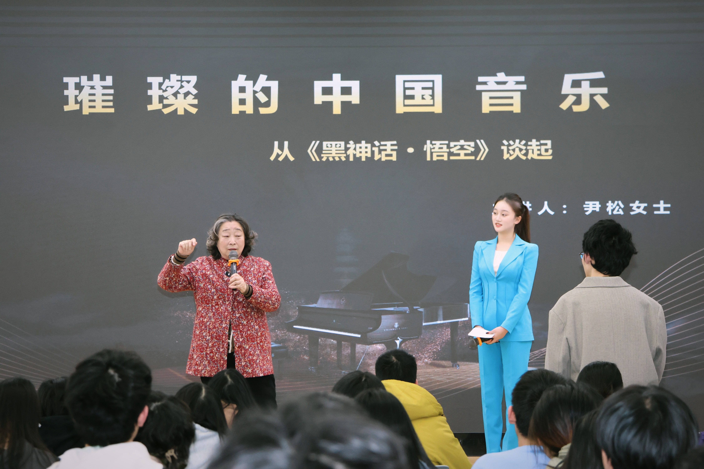
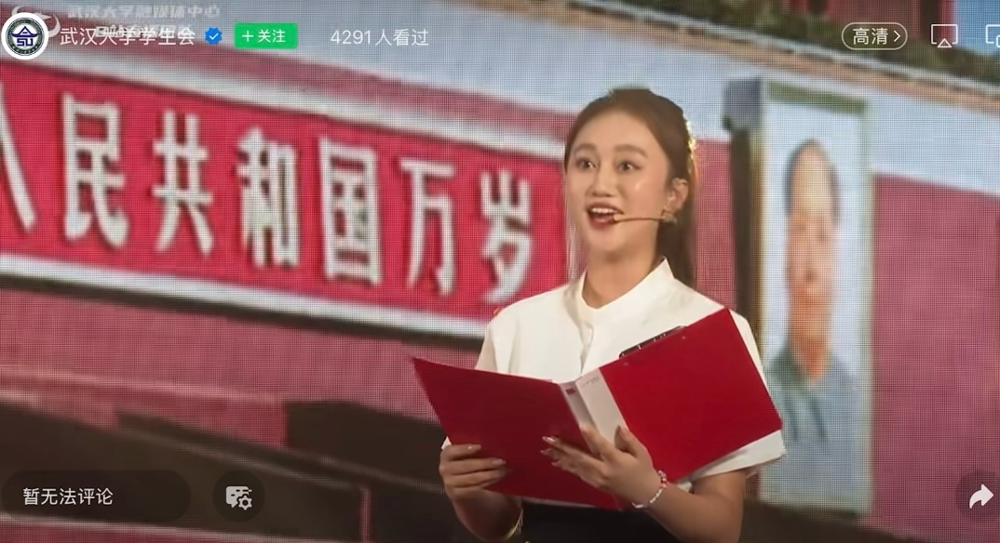

01 / NO. 476
the art of hosting珞珈论坛
珞珈论坛
主持人组成员
武汉大学大学生创业指导中心校推组
主持稿撰写 · 现场活动主持

FORUM
SELECTED FORUMS · 02
现场主持让思想与听众相遇。

02 / HOSTING武汉大学大学生创业指导中心校推组
主持稿撰写 · 现场活动主持

SELECTED FORUMS · 02

02 / HOSTING